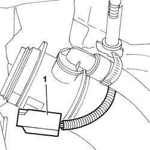

5520C20 Heater plugs CONTROL UNIT - R.R.
- Path
- Procedures > 55 ELECTRICAL EQUIPMENT > 5520 ENGINE STARTING > 5520C COLD STARTING SYSTEM (DIESEL ENGINES) > 5520C20 Heater plugs CONTROL UNIT - R.R.
- Kind
- repair procedure (removal / refitting; the operation number is the code)
- Applies to
- engines: 2.0 16V JTD, 2.2 16V JTD; all production periods
- Interactive page
- https://sloeber94.github.io/elrnDB-fUlss/en/#/179007558
Applies to: engines: 2.0 16V JTD, 2.2 16V JTD; all production periods
 Removing
Removing
 Refitting
RefittingOp. 5010B18 CLIMATE CONTROL UNIT AIR INTAKE - R.R.
1. Undo the fixing nut (1a) and disconnect the electrical connections (1b) and remove the heater plugs control unit (1c).

Applies to: engines: 2.0 16V JTD, 2.2 16V JTD; all production periods
Refitting
Removing- Place the control unit in position and tighten the fixing nut.
- Connect the electrical connections for the control unit.